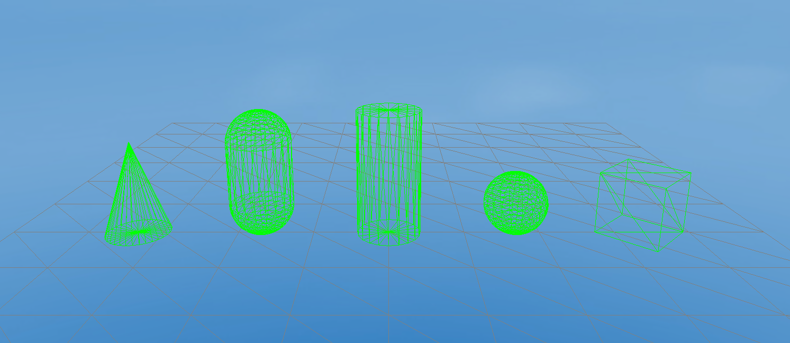

像素线
一、概述
像素线（Pixel Line ）也可以称之为像素线3D精灵，是通过渲染一组带有颜色的线，来绘制3D精灵的方式，如图1-1所示

（图1-1）
如图1-1所示，这是六种IDE提供的3D基础显示对象的网格模式，是一种用线条来展现网格的绘制方式
二、IDE中创建与使用
2.1 创建像素线3D精灵
在一个3D场景的Hierarchy窗口中，任何节点下，或者是空白位置，都可以通过鼠标右键来创建像素线3D精灵，如动图2-1所示

（动图2-1）
此时创建的像素线3D精灵，是看不到任何效果的，实际上就是创建了一个空的3D精灵节点，并添加了像素线渲染器（Pixel Line Renderer）组件，我们来了解一下像素线渲染器组件的信息
2.2 属性设置
如图2-2所示，像素线渲染器有如下的属性

（图2-2）
由于 Pixel Line Renderer 组件是继承自 Base Renderer 组件，因此像素线渲染器本身具备一些基础属性，如图2-3所示

（图2-3）
接收阴影 Receive Shadow ，产生阴影的设置 Case Shadow 和光照贴图的缩放和偏移等基础属性，在这里就不介绍了
2.3 像素线材质
首先我们在Asset下新建一个Material，默认情况下 Material 的 Shader 是 BlinnPhone，接下来我们先把这个Material拖入像素线渲染器的材质属性中，如动图2-4所示

（动图2-4）
第二步要修改 BlinnPhone 的 shader 为 Laya.Unlit shader ，并勾选 Vertex Color
（动图2-5）
有了材质，剩下就需要添加像素线数据了
2.4 像素线数据
像素线数据就两点，像素线的最大线数量和像素线数据，如图2-6所示

（图2-6）
Max Line Count：最大线数量
Pixel Lines Datas：像素线数据
注意：像素线数据的数量是不能超过最大线数量的
默认时，已经添加了一个像素线数据，从（0，0，0）点到（0，0，0）点的白色线，只不过是一个点，我们无法看到效果
我们可以通过修改 End Position 和颜色，如图2-7所示

（图2-7）
修改之后，我们可以看到一条最基本的像素线，如图2-8所示

（图2-8）
到此，像素线渲染器就介绍完了，通常我们通过IDE来添加每一条像素线来描绘一个网格是不可能的，往往我们会通过代码来实现，下面我们介绍代码是如何使用的
三、代码中创建与使用
PixelLineSprite3D 是 LayaAir引擎提供的像素线3D精灵类，我们看看这个类最重要的方法
3.1 构造方法
从下面的代码中可以看到，当初始化一个PixelLineSprite3D 的构造方法时，代码已经帮我们添加了 PixelLineRenderer 组件和 设置了 UnlitMaterial 材质并勾选了使用 VertexColor ，如上面2.3小节中手动添加材质的过程在代码中是自动做好了
/**
* 创建一个 <code>PixelLineSprite3D</code> 实例。
* @param maxCount 最大线段数量。
* @param name 名字。
*/
constructor(maxCount: number = 2, name: string = null) {
super(name);
this._render = this.addComponent(PixelLineRenderer);
this._geometryFilter = (this._render as PixelLineRenderer)._pixelLineFilter;
(this._render as PixelLineRenderer).maxLineCount = maxCount;
let material = this._render.material = new UnlitMaterial();
material.enableVertexColor = true;
}
3.2 AddLine()
PixelLineSprite3D 已经直接调用了 PixelLineRenderer 组件的 addLine() ，看来可以直接设置点位置和颜色即可
/*
* 增加一条线。
* @param startPosition 初始点位置
* @param endPosition 结束点位置
* @param startColor 初始点颜色
* @param endColor 结束点颜色
*/
addLine(startPosition: Vector3, endPosition: Vector3, startColor: Color, endColor: Color): void {
(this._render as PixelLineRenderer).addLine(startPosition, endPosition, startColor, endColor);
}
3.3 Tool.linearModel()
通常我们可以利用addLine() 方法来实现把复杂的网格数据转变成像素线数据，我们可以写一个Tool工具类，方便转换使用：
//Tool工具类
export class Tool {
private static transVertex0: Vector3 = new Vector3();
private static transVertex1: Vector3 = new Vector3();
private static transVertex2: Vector3 = new Vector3();
private static corners: Vector3[] = [];
//线性模型转换方法
static linearModel(sprite3D: Sprite3D, lineSprite3D: PixelLineSprite3D, color: Color): void {
if (sprite3D instanceof MeshSprite3D) {
var meshSprite3D: MeshSprite3D = <MeshSprite3D>sprite3D;
//获得Sprite3D对象的网格数据
var mesh: Mesh = meshSprite3D.meshFilter.sharedMesh;
var positions: Array<Vector3> = [];
//拷贝并填充位置数据至数组
mesh.getPositions(positions);
//拷贝并获取网格索引的副本
var indices = mesh.getSubMesh(0).getIndices();
for (var i: number = 0; i < indices.length; i += 3) {
//每此拿3个位置数据
var vertex0: Vector3 = positions[indices[i]];
var vertex1: Vector3 = positions[indices[i + 1]];
var vertex2: Vector3 = positions[indices[i + 2]];
//通过矩阵转换一个三维向量到另外一个归一化的三维向量
Vector3.transformCoordinate(vertex0, meshSprite3D.transform.worldMatrix, this.transVertex0);
Vector3.transformCoordinate(vertex1, meshSprite3D.transform.worldMatrix, this.transVertex1);
Vector3.transformCoordinate(vertex2, meshSprite3D.transform.worldMatrix, this.transVertex2);
//绘制3条像素线
lineSprite3D.addLine(this.transVertex0, this.transVertex1, color, color);
lineSprite3D.addLine(this.transVertex1, this.transVertex2, color, color);
lineSprite3D.addLine(this.transVertex2, this.transVertex0, color, color);
}
}
}
}
3.4 代码使用
通过如下代码对工具类 Tool.linearModel 的使用，可以把一个 PixelLineSprite3D 对象的网格数据设置成像素线数据：
//创建一个球体
var sphere: MeshSprite3D = (<MeshSprite3D>this.sprite3D.addChild(new MeshSprite3D(PrimitiveMesh.createSphere(0.25, 20, 20))));
sphere.transform.position = new Vector3(0.0, 0.75, 2);
//创建一个像素线3D精灵
var sphereLineSprite3D: PixelLineSprite3D = (<PixelLineSprite3D>this.lineSprite3D.addChild(new PixelLineSprite3D(3500)));
//转换球体的网格数据为像素线数据
Tool.linearModel(sphere, sphereLineSprite3D, Color.GREEN);
到此，像素线代码部分就介绍完了，往往我们也可以对一个外部模型转换成像素线数据来使用，在实际项目中可以丰富展现效果
如动图3-1所示，展示外部模型的像素线效果

（动图3-1）